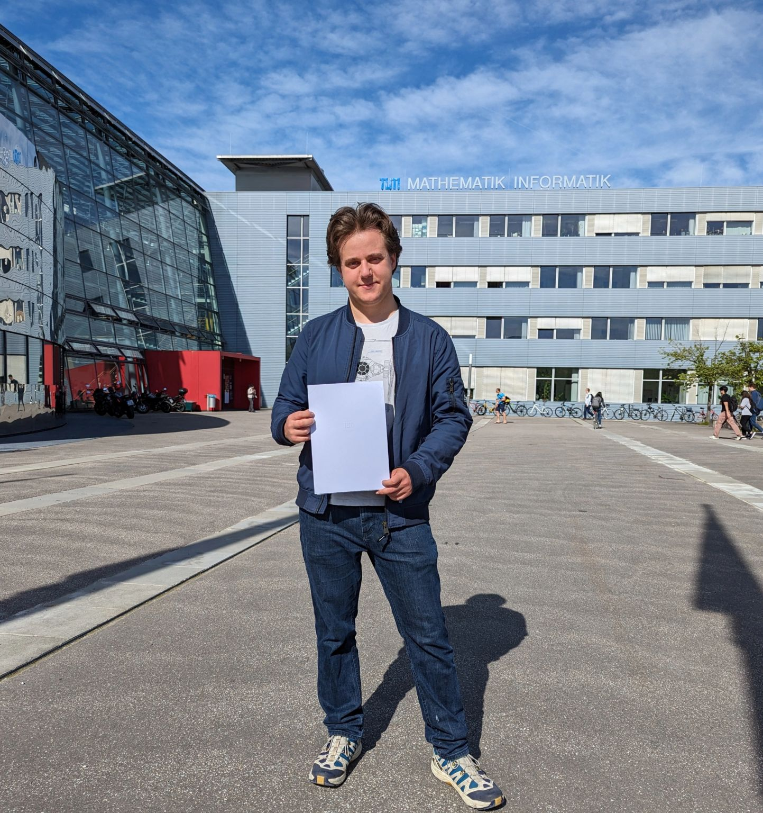
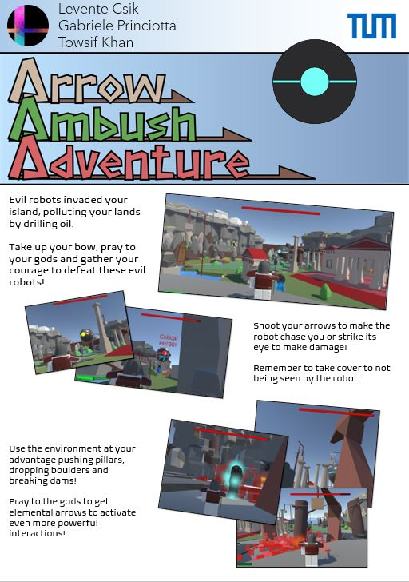
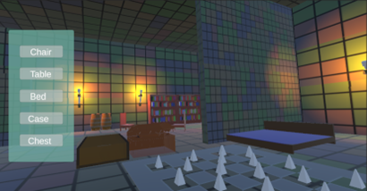
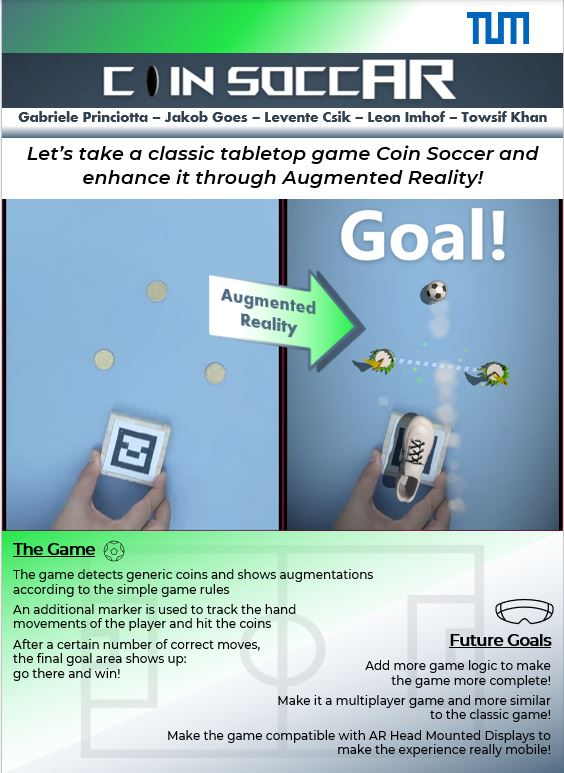
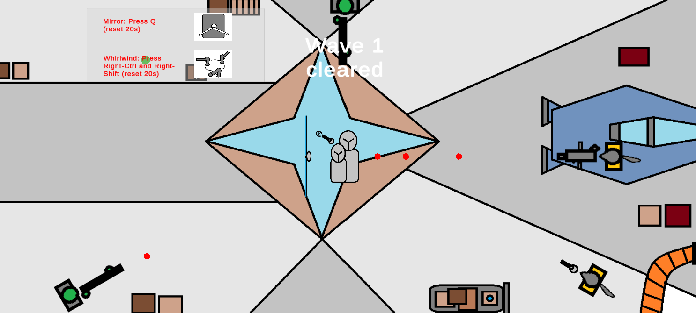
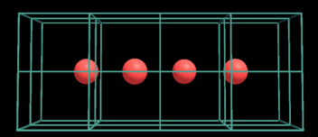

Biography:
Biography

Studies and Work
Projects
| Project | Date | Description | Skills |
|---|---|---|---|
| Static Code Analysis Application | 2021 - 2022 | I wrote an application that measures the source code provided and offers changes to follow the SOLID and Object-oriented principles. | Clean Code · Object-Oriented Programming · SOLID · SonarQube |
| Narrative Validation Tool | 2023 | I built a tool for game development that measures the player experience based on pacing and travel time and where the story could be improved. | Unity Tool Development· Storytelling· Narrative Design |
| Medical Software for Neurorehabilitation | 2022 | I built an Augmented Reality application for HoloLens 2 that helps patients of a clinic with visual impairment to regain depth perception. | Augmented Reality· Serious Game· HoloLens 2 |
| Remote Augmented Reality Project | 2023 | Developing an Augmented Reality application for a university project in Munich that can send the visual information to a remote collaborator. | Augmented Reality Development· Remote Collaboration |
| MovieWorld | 2020 | I developed a RESTful application using UWP and a MovieDB API. It finds interesting movies or series to watch based on genre or favourite actors. | C#· RESTful API · UWP |
| Android Soccer Game | 2022 | I implemented a multiplayer Augmented Reality game where the soccer ball and gates augmented on the surface. | Android Development · OpenCV · OpenGL · C++ |
| Android Journal Application | 2019 | Developing an android journal application that allows users to create posts and assign keywords for these journal posts. | Android Development· Kotlin |
| Weather Forecast Application | 2020 | I implemented a web application with Angular to represent the weather information in graphs for the day and next week. | Typescript· Angular· Web Development |
| Person Management Program | 2024 | Developing a Spring Boots web application to store personal data. | Java· Spring Boots· Database· Design Pattern· IntelliJ |
| Crowd Simulator Application | 2022 | I implemented a crowd simulation using Python and VADERE framework to simulate the dynamic traffic of a train station in Munich. | Crowd Simulation· VADERE· Python |
Games
My games
Arrow Ambush Adventure
Defeat the evil robot who attacked your village. Take cover from its rockets and since your arrow barely scarce the armor of the robot, be creative! Pray at the altars of Fire, Water, Lightning and Ice to empower your arrows, turn the environment against the robot, use elemental combinations to further empower your attacks and aim at the weak points to score critical hits!
DemoMimic
The old tales talk about cunning and utterly dangerous creatures in the old dungeons. Skeletons, kobolds, liches, but not one of these strikes more fear into the heart of the young adventurers than the mimic. Shapeshifting hunter who understands the human behavior and waits until they lower their guard to devour them. Be a mimic and turn into ordinary objects to lure the adventurers close and collect their gold and magic items. Spend your wealth to build traps or buy more influence and move into lower-level dungeon, and one day you will be the Final Boss of this dungeon!
ARCoinSoccer
We tried to Augment and Gamify the simple game of coin soccer. The original game is played by flicking coins on a table. Our game renders relevant objects on top of those objects to make it more exciting in the Augmented World. This project was developed with the collaborative efforts of: Gabriele Princiotta, Levente Balazs Csik, Jakob Florian Goes, Leon Imhof, Towsif Zahin Khan This project was made using: OpenCV, FreeGlut, GLEW, GLFW For a demo see
DemoSacred Band
This game was created for the Bullet Hell GameJam 2024. This cooperative bullet hell game approaches the bullet hell genre from another perspective. Instead of dodging the bullets, one player must use the shield to protect the players and the other player must aim towards the enemies. You better work together because you can't shoot through the shield, so the players should organize their movement together!
SpiAR
Medical Software for Neurorehabilitation
Understanding depth can be quite difficult with visual impairment. People can lose their depth sight in multiple ways, but visual impairment is one of the most common causes. As part of an inter-disciplinary project, I worked on a serious game to help people with visual impairment to use monocular cues to understand depth. We introduced different exercises to an Augmented Reality application that help people with visual impairment.
See all games
My hobbies
Hobby
Programming (Personal Projects and new Technologies)
Reading fantasy and sci-fi books
Board Games (Twilight Imperium, Civilization, Eldritch Horror)
Tabletop Games (DnD, Cyberpunk 2020)
Digital Games (Age of Mythology, Crusader Kings 3, Baldur's Gate 3)
Snowboarding
Bike Journeys